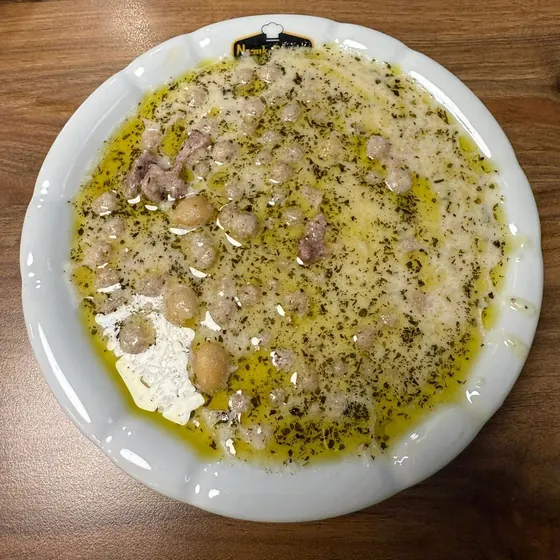

Yuvalama
Rice and meat dumplings in yogurtPirinç unu ve kıymadan yuvarlanan minik toplar, kuşbaşı et ve nohutla sarımsaklı yoğurtta pişer. Antep'te bayram sofralarının yemeği.
Tiny dumplings of rice flour and minced meat, cooked with lamb and chickpeas in a garlicky yogurt sauce. A festive dish in Gaziantep.
Ana yemek